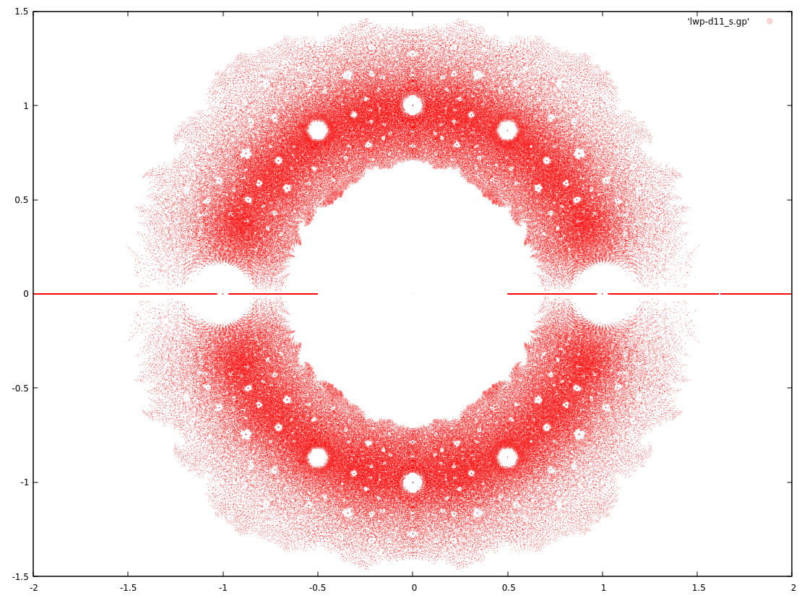
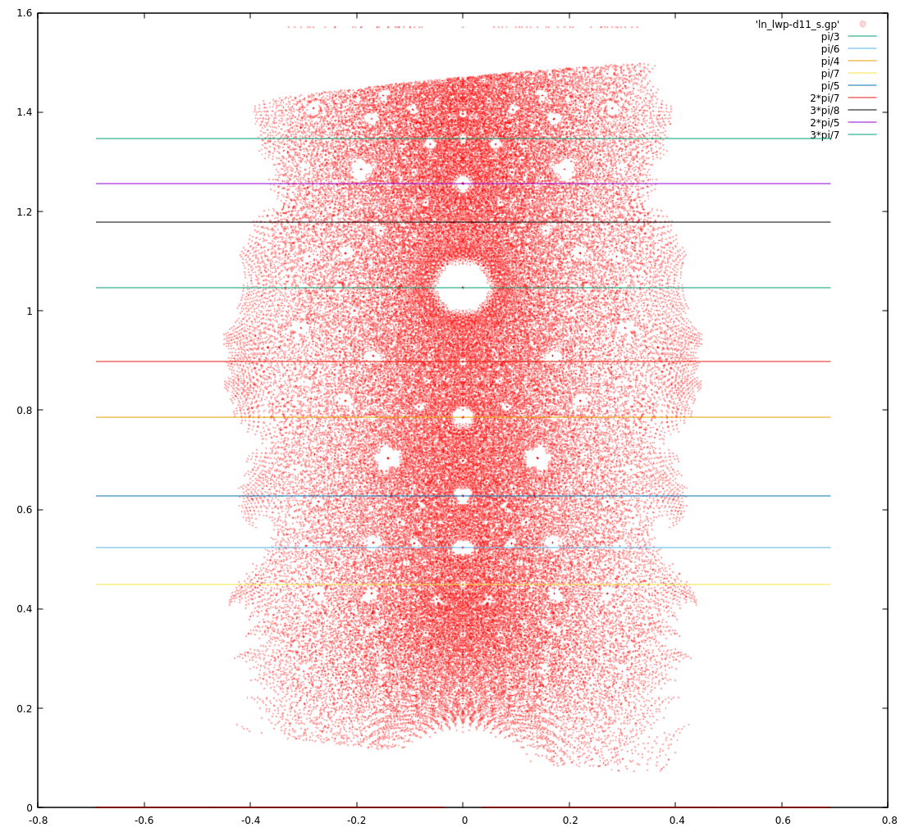

Dev Blog
| ./dev |
|
Original theme by orderedlist (CC-BY-SA)
Where applicable, all content is licensed under a CC-BY-SA.
|

Littlewood Polynomial Notes
Littlewood polynomials are polynomials whose coeffients are drawn from a finite set of ${-1,1}$.
Plotting the roots of augmented Littlewood polynomials (allowing for 0 as a coefficient) for a restricted degree $n$ yields pretty pictures.

Each point represents a complex root of a polynomial $p(z) = \sum_{k=0}^{11} c_k z^k$, where $c_k \in { -1, 0, 1 }$.
Claim:
$$ \begin{align} & c_k \in {-1, 0, 1} \\ p(z) & = \sum c_k z^k \\ p(z_0) & = 0 & \\ \to |z_{0}| & \ge \frac{1}{2} \text{ or } z_{0} = 0 \\ \end{align} $$
Proof (by contradiction):
$$ \begin{align} & c_0 \ne 0 \\ \to p(z_0) & = c_0 + \sum_{k=1}^{n} c_k z_{0}^k \\ \to 1 & = | \sum_{k=1}^{n} c_k z_{0}^k | \\ \to 1 & < \sum_{k=1}^{n} | \frac{1}{2} |^k < 1 \\ \end{align} $$
This is sloppy and doesn't take into account degree, $n$, of the polynomial.
"In the limit", this is true, but this is violated for smaller degree polynomials.
In general, we can ask what are the symmetries of transformations on $z$ that will still admit Littlewood polynomials.
Some candidates for $p(z)$ are:
- $p(z^{-1})$
- $p(z^{\dagger})$
- $p(-z)$
The complex conjugate gives the mirror symmetry about the x-axis. The negation and complex conjugation gives the symmetry about the y-axis ($p(\alpha + i \beta) = 0 \to q(-\alpha + i \beta)=0$). The inversion gives a kind of projection onto the Riemann sphere and/or Mobius transformation like symmetry, giving a projection symmetry about the circle/sphere at radius 1.
$$ \begin{align} & c_k \in {-1, 0, 1} \\ p(z) & = \sum c_k z^k \\ \end{align} $$
y-axis symmetry ($x \to -x$):
$$ \begin{align} p_{-}(z) & = \sum_{k=0}^n (-1)^k c_{k} z^k \\ p(z) & = p_{-}(-z) \\ \to p(z_0) & = p_{-}(-z_0) = 0 \end{align} $$
x-axis symmetry ($x \to x^{ \dagger }$):
$$ \begin{align} p_{\dagger}(z) & = \sum_{k=0}^n c_{k} ( z^{ \dagger })^k \\ p(z) & = p_{ \dagger }( z^{ \dagger } ) \\ \to p(z_0) & = p_{ \dagger }( z_0^{ \dagger } ) = 0 \\ \end{align} $$
Since the coefficients are real, $p_{\dagger}(z)$ has the same roots.
Inversion symmetry ($x \to \frac{1}{x}$):
$$ \begin{align} p_{-1}(z) & = \sum_{k=0}^n c_{n-k} z^k \\ p(z) & = z^n p_{-1}(z^{-1}) \\ \to p(z_{\dagger}) & = z_{\dagger}^n p_{-1}(z_{\dagger}^{-1}) = 0 \\ \end{align} $$
Noting that $z^n p_{-1}(\frac{1}{z})$ is also a Littlewood polynomial.
All of the above create a situation that for every $p(z)=0$, there's a corresponding $p_{-}(-z)=0$, $p_{\dagger}(z^{\dagger})=0$ and $p_{-1}(z^{-1})=0, (z \ne 0)$, establishing the gross level symmetry.
An explanation of how Dragon curves show up:
The idea is that the dragon curve can be created through in iterated function system (IFS) by choosing randomly between $f_{-,z}(x)=1-zx$ and $f_{+,z}(x)=1+zx$ for some complex z and initial $x=0$.
The iteration of ${f_{-,z}, f_{+,z}}$ trace out all Littlewood polynomials for initial values of $f_{-,z}(0)$ and $f_{+,z}(0)$.
Here's what I think the argument is in the category cafe thread:
$p(z_0)=0$ is the result of a finite cutoff IFS from above. If the IFS is a nice fractal, that means other polynomials from the IFS evaluated at the source point $z_0$ will trace out a fractal (dragon-like curve) around the image point 0. Since we're dealing with a small neighborhood, we can heuristically use linearity to shift the image points not landing on 0 to 0, moving their source points along with them. The source points will then create a dragon-like fractal curve in the source map, giving us the dragon curves that we see in zoomed in snapshots of the root map.
Also note that the 'twist' in the dragon-like curves might be explained with another heuristic argument that goes as follows:
Take $p(z_0)=0$ and a 'similar' polynomial Littlewood $q(z_0 + \delta) = 0$. $p'(z_0) \sim q'(z_0)$ (and perhaps even more so than $p \sim q$?), and $q(z_0 + \delta) \sim q(z_0) + \delta q'(z_0)$, we can try solving for $q(z_0) + \delta q'(z_0) = 0 \to \delta = -\frac{q(z_0)}{q'(z_0)} \sim -\frac{q(z_0)}{p'(z_0)}$.
So the 'correction' source change for $q(z)$ has the factor of $p'(z_0)$ which might induce a sort of 'twist' to the curve.
Attempts at explaining the holes around the unit circle:
The holes on the unit disc look to have bigger gaps in a Farey like sequence.
Take the upper quadrent of the roots ($z = a+ib, a>0, b>0$) to remove as much symmetry as possible and then take the complex logarithm. The points below the unit disc could also be discarded but the gaps are easier to see when they're left in, which introduces a mirror symmetry in the complex logarithm plot.

The lines correspond to the first few Farey sequence numbers with a factor of $\pi$.
One observation is that if we have a polynomial, $p_0(z)$, of $\deg(p_0) = d$, with root $p_0(z_0)=0$, then this implies the existence of another Littlewood polynomial, $p_1(z)$ with $\deg(p_1) = \frac{d}{\alpha}$ (for $\frac{d}{\alpha} \in \mathbb{Z}$) and $p_1(z_0^{\alpha}) = 0$.
For example, consider:
$$ \begin{align} p_0(z) & = 1 + z \\ p_0(z_0) & = 0 \\ \to p_1(z) & = 1 + z^2 \\ \to p_1(z_0^{\frac{1}{2}}) & = 1 + (z_0^{\frac{1}{1}})^2 \\ & = 1 + z_0 = 0 \end{align} $$
If we collect roots for Littlewood polynomials of finite degree $n$, this means that for all polynomials of $\lfloor \frac{\deg(d)}{2} \rfloor$ ($d \le n$), there is a corresponding Littlewood polynomial of $deg(d)$ that share half of its roots under the $(\cdot)^\frac{1}{2}$ transformation. The same with $\lfloor \frac{\deg(d)}{3} \rfloor$, $\lfloor \frac{\deg(d)}{5} \rfloor$, $\lfloor \frac{\deg(d)}{7} \rfloor$, etc.
The roots of $p_0(z)$ get 'squashed' by a factor of $\alpha$ when they become roots of $p_1(z)$, giving the plot another more subtle symmetry. That is, for every root (of unit length) $e^{i \theta}$, there are other roots $e^{ i \alpha \theta }$ and $e^{ - k \alpha \theta }$, for $k$ cycling through all the possibilities.
If the "dead zone" of roots around ${ 1, -1 }$ is taken as a given, this explains the other "holes" around the $|z| = 1$ circle, as the roots fan out to the other locations along the circle and why it's a Farey sequence. The number of polynomials that can be scaled up by $2$ is more than can be scaled up by $3$ which is more than can be scaled up by $5$, etc.
Where there's a "dead zone" around the ${ 1, -1 }$ points ist still something that I don't understand.
As some guy on the street notices, if $p(z)$ and $q(z)$ are Littlewood polynomials, with $\deg(q) = d-1$, then
$q(z) \cdot p(z^d)$ is also Littlewood.
Some questions I have (they might be known, I just don't know them) are how what are the sizes of the dead zone holes and how do they scale as the degree increases.
One way to attack this is to plot the minimum distance between roots that fall along the Farey sequence angle proportions (excluding purely real roots) and/or to plot the frequency/falloff.
Most likely, once the initial dead zone around $z = 1$ is understood, then the rest should follow, though this would need confirmation. In terms of an initial heuristic argument for the size of the dead zone around $z=1$, the root $z_0=1$ might be privileged because of the way the coefficients are chosen.
Any polynomial which has an equal number of coefficients equal to 1 as -1 must have a root at $z=1$. Doing a quick estimate with Stirling's approximation tells us that there should roughly be $O(\frac{1}{\sqrt{d}})$ of these polynomials for a given degree $d$. This, combined with the fact that roots tend to "repel", by some heuristic measure, might give us enough information to get an understanding of the dead zone around $z=1$.
References
- Baez: The Beauty of Roots
- n-Category Cafe
- Bohemian Matrices (wiki)
- Iterated Function System
- Heighway dragon
- mpsolve
- Zeros of Polynomials with 0,1 Coefficients by Odlyzko and Poonen